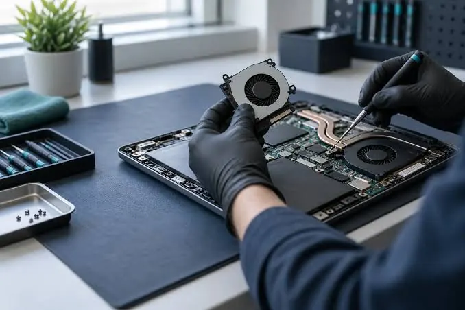

Laptops
5 Common Laptop Problems and How to Deal With Them
Discover five common laptop problems and practical first steps for troubleshooting slow performance, overheating, battery, Wi-Fi and startup issues.
Introduction
Sometimes even a reliable laptop can have issues. The issue could be caused by something simple like a disconnected cable or just an application using too many resources. Other issues could be caused by a degrade battery, blockage within the cooling system, faulty storage or a faulty part.
Be sure to back up any data on your laptop and avoid doing anything that could worsen your issue. If your laptop is still under warranty, before attempting to open it up or take it to an unauthorised repair centre, read through the manufacturers support advice. The following are 5 common issues that can occur and the safe steps you can take to address the issue and decide whether to take to a professional.

Slow laptop
A slow laptop can cause long start up times, freezing between apps or struggling while using multiple browsers. Causes could include too many start up applications, not enough RAM, not enough storage space, background updates, malware or overheating.
First give the laptop a normal restart. Ensure you save anything you are working on and close any unnecessary applications. Check what is using your CPU, RAM or storage. Use Task manager on Windows or Activity monitor on Mac to see what is using a lot of resources. Turn off any unnecessary start ups, uninstall any applications you no longer use and ensure you have the latest OS.
Ensure you have enough storage space. Don’t delete any strange folders on your system or use any unknown registry cleaners. Run a scan using a reputable security programme. If your laptop is still slow, a technician can run tests on your storage, RAM and cooling. Upgrading to an SSD or increasing your memory could help.
Overheating laptop
An overheating laptop can be uncomfortable, cause noisy fans and cause a drop in performance. Causes could include dust build up, blocked vents, faulty fan, high processor usage or the laptop not being on a suitable surface.
Place your laptop on a solid flat surface. Ensure there is no blockage to your vents. Avoid placing it on a bed, sofa or cushion. Close any unnecessary applications. Check if anything is causing your processor to work hard. If your fan is working very hard when doing simple tasks or frequently shutting down, book an inspection.
Avoid using a domestic vacuum on any parts inside, inserting anything into the vents or opening up the laptop if you don’t have the appropriate experience. You may need to be careful when opening up your laptop to clean the inside. Some laptops have fragile cables or small cooling units. A technician can clean out the fan and heatsink and check that there is good airflow.

Battery not charging or fast drain
A laptop battery can degrade over time however issues with charging can be caused by the charger, cable, port or power management. Ensure you are using the correct charger for your laptop and it is fully plugged in. Check that there is no damage to the cable or charger. Try plugging into a different suitable socket on the wall.
If your laptop is acknowledging the charger but not increasing the battery % check using the battery health tool from the manufacturer or battery report from the OS. Some laptops have battery saver mode which will limit the charging to help the long term health of the battery. This could be normal.
Reduce brightness, close any unnecessary applications and check what is running in the background. If your laptop is frequently turning off, the battery % is spiking or the battery looks swollen, stop using it and contact a professional. Don’t try to poke, bend or press the swollen battery.
No Wi-Fi / Internet
If your laptop isn’t connecting to Wi-Fi this could be due to an issue with the router, incorrect password, Wi-Fi turned off, outdated drivers, network settings or hardware issues. Firstly check other devices can connect. If none can, try restarting the router as per your internet providers instructions. Check for any service outages.
If other devices are working, turn Wi-Fi off then on again. Ensure Airplane mode is switched off. Connect to the right network. Be careful when entering your password. Restart your laptop and update any network drivers from the official support page of your laptop manufacturer. Don’t download drivers from unknown sites.
If your laptop is connecting to Wi-Fi but the websites aren’t loading, try a different website. Check if a VPN or Proxy is causing an issue. Try forgetting the network and reconnecting. Make a note of your password. If there is no wireless adapter showing in your system settings or it keeps dropping the connection on different networks you may need a professional to diagnose.
Laptop won’t turn on
If your laptop seems to be completely dead this could be due to a dead battery, faulty charger, damaged charging port, stuck power state or internal hardware issues. Firstly complete a safe visual check. Remove any unnecessary peripherals. Plug in the correct charger into a known working socket. Check for any charging indicators. Let it charge for a while. Complete the power reset procedure suggested by your manufacturers. This will vary depending on your model so make sure you follow the correct instructions for your laptop. If it has any external peripherals that can be removed, remove these. See if there are any lights, fan spin or any sounds when powering on. This can help a technician identify the issue.
If there is any burning smell, liquid damage, strange heating or the battery looks swollen, safely unplug the power. Don’t try to open up the power adapter or attempt any motherboard repairs. A qualified technician can test the charger, battery, power port, memory and mainboard.
When to stop trying to fix the issue
If your laptop has suffered any liquid damage, the battery is swollen, the charger or port look damaged, there is a burning smell, or it keeps turning off, stop trying to fix the issue. If you think important files are at risk due to storage failure, or after basic checks the issue hasn’t been resolved and would require the laptop to be opened, contact a professional. Trying random fixes can make it harder to diagnose. Make a note of any symptoms, error codes, any recent changes and what you have tried. This can help a service professional identify what the likely cause is quicker.
Ways to prevent issues with your laptop
Ensure you keep your software updated through official sources. Keep a good security programme. Regularly back up important files. Ensure nothing is blocking your vents. Use a padded laptop bag when transporting. Avoid eating or drinking over the keyboard. Be careful when removing any peripherals. Use the correct charger. Shut down or restart when needed.
Don’t ignore minor changes. If your fan is getting louder, battery is draining quicker or there are new errors on start up this could be a sign of an issue starting to develop. Fixing the symptoms early can reduce downtime and repair costs.
Conclusion
Common issues users face with their laptop are slowness, overheating, battery issues, Wi-Fi issues and not turning on. Some of these issues can be fixed by completing some safe checks. However if there is an hardware issue or signs such as swelling, liquid damage or burning smell then a professional should be contacted.
Ensure you back up your files. Follow the official support instructions and don’t open it up if you aren’t qualified. If the issue still isn’t resolved book a proper diagnosis so the root cause can be addressed.
Need a hand with your printer or laptop?
Printerworld sells printers, laptops and genuine supplies, and repairs and services both. Bring in your model number and we will help you get it right.